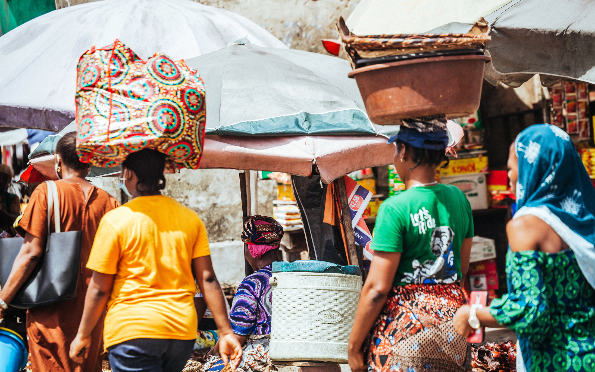
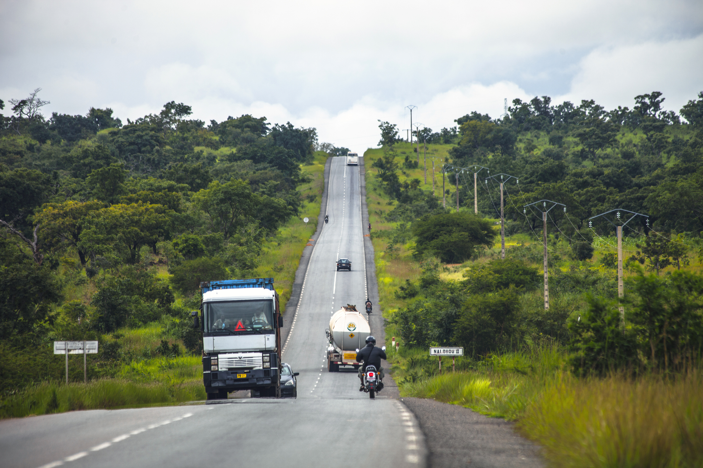
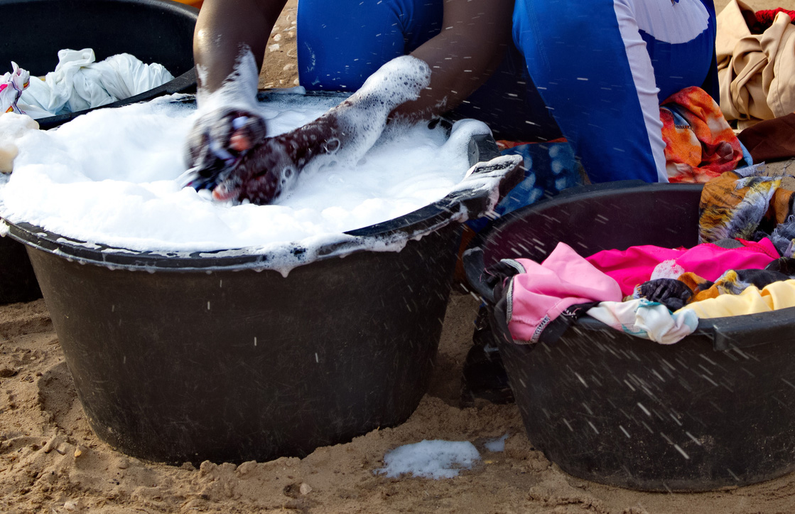
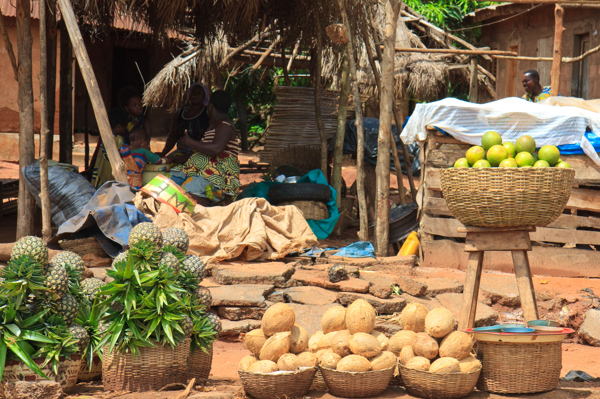

Looking for Greener Pastures
Aissetou is from the town of Bassila in Benin Republic, close to the Togolese border. She was not able to continue her education after primary school and began hawking food as a way to help her parents and siblings. Because Bassila is close to a border, Aissetou had experience as a cross-border trader from a very young age. She was not satisfied with her earnings in Bassila and felt that she could have better prospects elsewhere. 
Aissetou heard that there were many job opportunities in Lagos. While hawking food one day, she met someone who promised her a job as a sales girl in Lagos if she paid the cost of her journey herself. She decided to join them. With the little savings from hawking and the contribution of family members, she hired a car along with other migrants to travel from Bassila to Lagos.
To Cotonou by Car
Within a short drive from Bassila, Aissetou's car crossed through Cotonou, Benin’s largest city. 
Crossing the Border Without a Passport
 From Cotonou, the group of migrants took a car to the Seme-Krake border between Benin Republic and Nigeria. They intended to cross the border even though none of the travelers had passports. At Seme, they crossed the informal border by foot and by okada. Aissetou had to pay a fee when she got to the other side because she didn’t have any form of identification. The fee was meant to cover the cost of a laissez-passez – an entry ticket (not to be confused with the United Nations document), given by touts who make money off cross-border migrants and petty traders who take informal pathways. She didn’t specify how much she paid in 2002.
From Cotonou, the group of migrants took a car to the Seme-Krake border between Benin Republic and Nigeria. They intended to cross the border even though none of the travelers had passports. At Seme, they crossed the informal border by foot and by okada. Aissetou had to pay a fee when she got to the other side because she didn’t have any form of identification. The fee was meant to cover the cost of a laissez-passez – an entry ticket (not to be confused with the United Nations document), given by touts who make money off cross-border migrants and petty traders who take informal pathways. She didn’t specify how much she paid in 2002.
Without a passport, entry and exit is difficult. Passport and identification checks have become stricter in recent years and people without passports often have to pay more money to transporters and officials in order to cross. According to Aissetou, entering or leaving Nigeria is difficult if you don’t have money because of the many checkpoints between the border, at Badagry and Mile 2. Since the first time she arrived in 2002, Aissetou has found that crossing the border has become increasingly complicated...
"Immigration people disturb us all the time. If you have money to give to them, they will let you go."
Arriving in Lagos to Broken Promises
"The first time I came to Lagos, I did not know anybody."
From Seme, Aissetou took a danfo (public transport bus) to the Oshodi local government area, one of the major business and transportation hubs in Lagos. There, she found short-term accommodation. In Bassila, Aissetou was promised a job as a sales person in a shop, but when she arrived in Oshodi, her contact promised instead to take her to a construction company called Sematech where he knew someone who could find her a job. Work in Sematech did not materialize. Instead, she was placed in a house to work as a maid, and she never found a job as a sales girl in a shop or any work in Sematech. 
Because she was new to Lagos and had no employment history, Aissetou was forced to work as a housekeeper for a long time. It was a difficult experience because she had never worked as a maid before and was not prepared. The job was hard and paid poorly. Aissetou was unhappy.
"I was a housekeeper, and I also used to hawk small things too. I was earning 150 Naira per day."
For many years, Aissetou was based in Oshodi where she found other positions as a maid in different areas of Lagos.
Finding a Way Out
Aissetou worked as a maid for over ten years. When she had saved enough money, she started selling food items at Obada Market (also known as Ipodo Market), an informal market in Ikeja, the capital of Lagos State. She was hawking food on her head because she could not afford a stall at the time. She bought food items like vegetables and fruits from Benin Republic and Mile 2 and sold them at the market. 